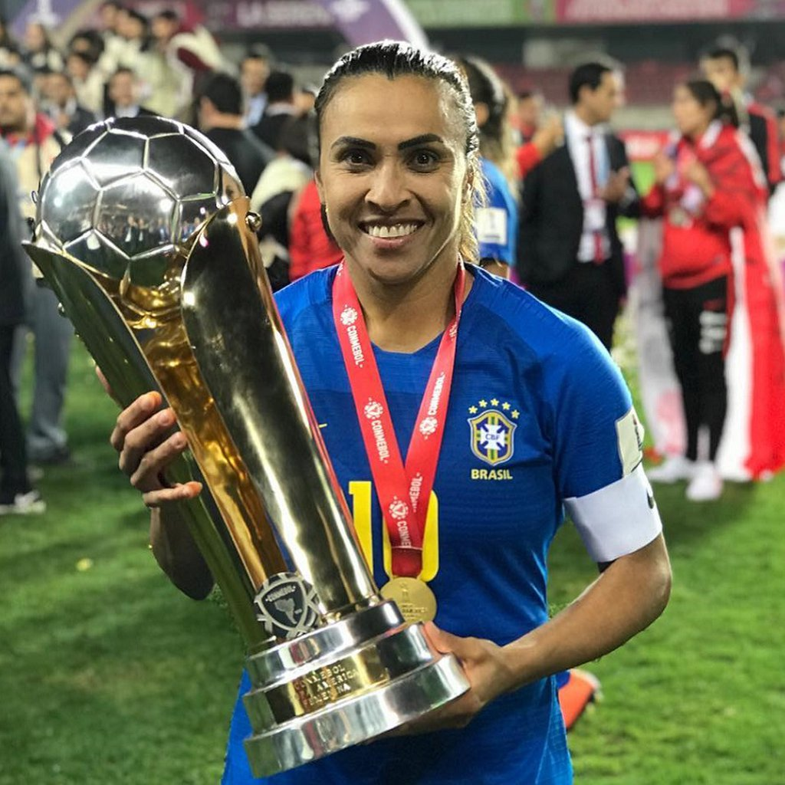
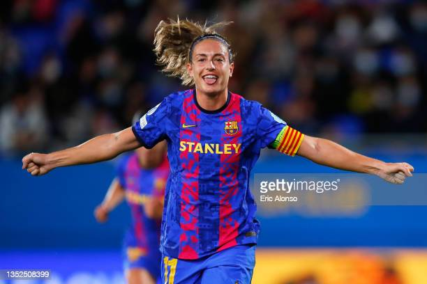
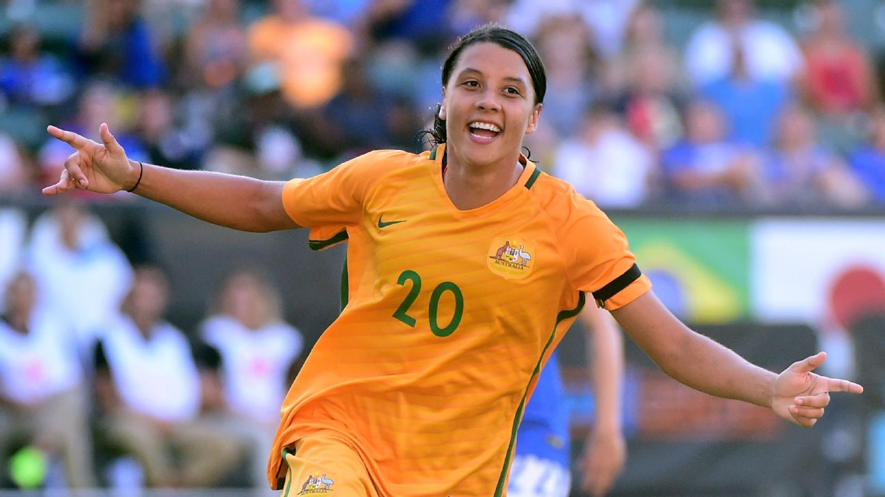
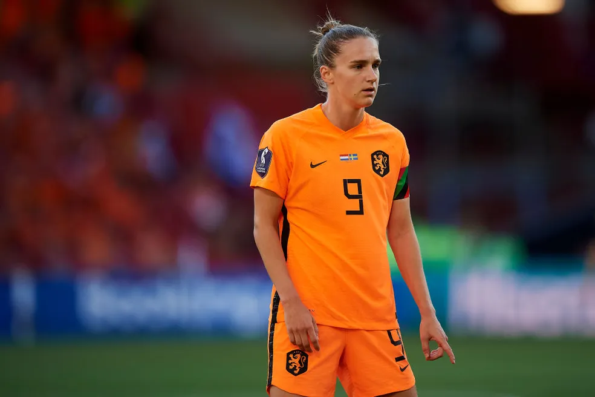
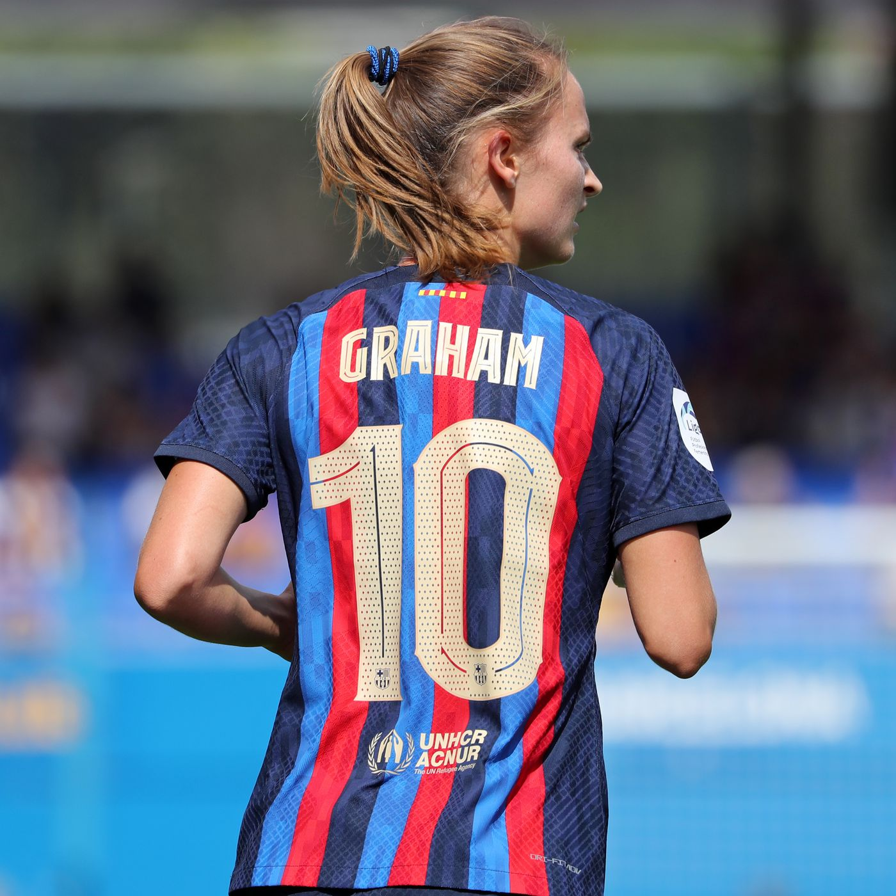

Os cinco mlhores clubes do mundo
1.Marta

país: Brasil
Clube:Orlando pride
Idade: 37
posição:meia
Marta: 10 fatos sobre a maior jogadora de todos os tempos
Foi eleita seis vezes a melhor jogadora do futebol do mundo,
ultrapassando Cristiano Ronaldo e Messi. Marta foi eleita
pela FIFA a melhor jogadora do futebol feminino,
ultrapassando outros craques do futebol, detendo seis troféus.
A jogadora recebeu os prêmios nos anos de 2006,2007,2008, 2009,
2010 e 2018.4 de mai. de 2023
2. Alexia Putellas

País: Espanha
Clube: Barcelona (ESP)
Idade: 28
Posição: Meia
Melhor Jogadora Feminina da FIFA e, por isso, lidera o ranking da ESPN.
Ela não só comanda o Barça em campo, mas também é a imagem do time fora dele.
É o rosto dela que substituiu o de Lionel Messi nas placas de publicidade da cidade.
É o nome dela que as meninas usavam em suas camisas no Camp Nou quando
o Barça quebrou o recorde de público no futebol feminino não uma, mas
duas vezes nesta temporada. Isso é consequência de seu trabalho duro.
3.Sam Kerr

País: Austrália
Clube: Chelsea (ING)
Idade: 28
Posição: Atacante
Ela se tornou a maior artilheira de todos os tempos da Austrália
no que foi uma decepcionante Copa da Ásia para os Matildas,
continuando a aumentar sua coleção de Chuteiras de Ouro em terras do clube.
Kerr construiu o que já era uma primeira campanha completa impressionante
no Chelsea azul, continuando a marcar gols, fazer assistências e
problemas na defesa, mas nesta temporada, ela mostrou seu gosto por
talento e drama. -- Marissa Lordanic
4.Vivianne Miedema

País: Holanda
Clube: Arsenal (ING)
Idade: 25
Posição: Atacante
atacantes que já existiram. Em junho, ela se tornou a primeira jogadora
a se envolver em 100 gols na Super Liga Feminina da FA.
Além de ter um recorde de gols que quase ninguém nesta
terra pode chegar perto, ela também pode ser mais egoísta,
já que faz uma média de uma assistência a cada dois jogos.
Miedema é como uma máquina confiável que raramente falha.
5. Caroline Graham Hansen

País: Noruega
Clube: Barcelona (ESP)
Idade: 27
Posição: Meia
principais prêmios individuais ao longo da última temporada,
mas ela sobe para o quarto lugar no ranking da ESPN depois de
outra excelente campanha no Barça. A maioria dos gols marcados
por Putellas e companhia não seriam possíveis sem o hábil
trabalho de Graham Hansen na direita.